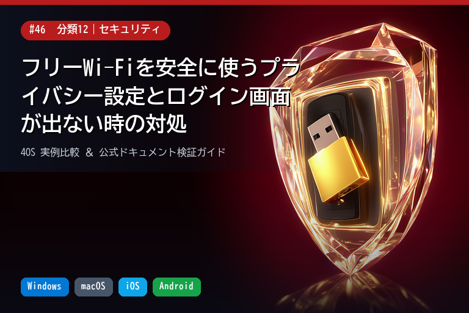

#46｜分類12: セキュリティ・プライバシー対策 2026-11-23

フリーWi-Fiを安全に使うプライバシー設定とログイン画面が出ない時の対処｜Windows・macOS・iOS・Android
カフェやホテル、空港などで提供されるフリーWi-Fiは非常に便利ですが、同時に「通信内容を盗み見られるのではないか？」「なぜかログイン画面が表示されない」といった不安やトラブルに直面することも少なくありません。
公開ネットワークでは、悪意のある第三者が設置した偽のアクセスポイントに接続してしまったり、中間者攻撃（MITM）によって通信データが傍受されたりするリスクが常に存在します。
この記事では、Windows、macOS、iOS、Androidの4つの主要OSにおいて、「プライバシーを守るための標準設定」と「ログイン画面が出ない時の具体的な解決策」を徹底解説します。これらを設定することで、安全かつスムーズに公共Wi-Fiを活用できるようになります。
4OS比較早見表
| 機能・項目 | Windows 11 | macOS | iOS (iPhone/iPad) | Android |
|---|---|---|---|---|
| プライバシー保護 | プライベートWi-Fiアドレス | Wi-Fiのランダム化 | プライベートWi-Fiアドレス | MACアドレスのランダム化 |
| パスキー対応 | Windows Hello連携 | FaceID / TouchID連携 | FaceID / TouchID連携 | Googleアカウント連携 |
| 標準ブラウザ | Microsoft Edge | Safari | Safari | Google Chrome |
| VPN設定 | 設定アプリから追加可 | システム設定から追加可 | 設定アプリから追加可 | 設定アプリから追加可 |
1. Windows 11 での実例手順
Windows 11では、ネットワークのプライバシー保護とパスキーによる高度な認証を組み合わせることで、セキュリティを強化できます。
プライバシー・セキュリティ設定手順
- プライベート Wi-Fi アドレスの有効化:
「設定」>「ネットワークとインターネット」>「Wi-Fi」を開き、接続先のプロパティで「プライベート Wi-Fi アドレス」を ON にします。これにより、アクセスポイントごとにMACアドレスが切り替わり、個人のデバイス特定を防ぎます。 - パスキー（Passkey）の活用:
ブラウザでのログイン時、Windows Hello（顔認証や指紋認証）を利用したパスキー登録を推奨します。「設定」>「アカウント」>「サインインオプション」でWindows Helloが有効であることを確認してください。 - HTTPSの強制確認:
Edgeブラウザのアドレスバーに「鍵マーク」が表示されているか、常に確認する習慣をつけましょう。
標準機能の制限事項・注意点
- VPNプロトコルの制約: Windows標準の設定からVPNを追加できますが、フリーWi-Fi事業者が特定のプロトコル（L2TP/IPsec等）を遮断している場合、接続できないことがあります。
- パスキーのバックアップ: パスキーへ移行する際、従来のパスワードが使えなくなる設定があるため、万が一の故障に備え管理ツールでの保存を推奨します。
よくあるトラブルと解決法
- 「Wi-Fi の設定画面（ログインポータル）」が出ない場合
- 原因: ブラウザが自動接続してしまい、認証ページへリダイレクトされない。
- 対策: 「コントロールパネル」>「ネットワークと共有センター」>「アダプターの状態」でWi-Fiを一度切断し、再度手動選択する。またはブラウザのキャッシュをクリアしてください。
- 「パスワード入力画面」が出ないが接続できない場合
- 原因: 認証サーバーとの通信エラー（HTTPS強制によるもの）。
- 対策: ブラウザで
https://example.comといった、あえて安全なサイトを直接入力してアクセスし、リダイレクトを促します。
- 「パスコード入力」が反応しない場合
- 原因: Windows Helloのタイムアウトやキーボード入力の競合。
- 対策: 「サインインオプション」でWindows Helloパスワードを再登録するか、ブラウザ上のPasskeyを直接使用してください。
2. macOS での実例手順
macOSはApple独自のセキュリティ基盤（iCloudキーチェーン等）と密接に連携しており、非常に高度なプライバシー保護が可能です。
プライバシー・セキュリティ設定手順
- Wi-Fiのランダム化:
「システム設定」>「ネットワーク」>「Wi-Fi」を選択し、「詳細…」ボタンをクリック。「プライバシー」タブにある「Wi-Fiのアドレスをランダム化」にチェックを入れます。 - パスキーとTouchIDの活用:
Apple IDログインやアプリ認証時にPasskeyが利用可能です。FaceID/TouchIDとの連携により、物理的な鍵なしで安全な認証が行えます。 - プロキシの確認:
通常は自動ですが、接続トラブル時は「ターミナル」を起動しnetworksetup -getwebproxies "Wi-Fi"で予期せぬ設定がないか確認します。
標準機能の制限事項・注意点
- VPNの互換性: macOS標準のVPN設定では、事業者が推奨しない古い暗号化方式を採用している場合に接続不可となることがあります。
- ブラウザによる挙動差: SafariとChromeで認証画面の挙動が異なる場合があります（特にVentura以降）。
よくあるトラブルと解決法
- 「Wi-Fi の設定画面」が出ない場合
- 原因: macOSの自動接続機能により、ポータルに到達する前に通信がブロックされる。
- 対策: 「システム設定」>「ネットワーク」でWi-Fiを一度オフにし、再度オンにする。または「詳細…」からIPアドレスを一時的に手動に変更してリセットします。
- 「パスワード入力画面」が出ないが接続できない場合
- 原因: 認証サーバーへのHTTPSリダイレクト失敗。
- 対策: ブラウザをSafariに切り替えて再アクセスするか、VPNを経由させてから再度ログインを試みてください。
- 「FaceID/TouchID でロックされる」場合
- 原因: ネットワーク環境での認証失敗によるセッション切断。
- 対策: 「ユーザーとグループ」で自動ロック時間を調整するか、一度ログアウトして再ログインを試してください。
3. iOS（iPhone / iPad）での実例手順
モバイルデバイスでは、移動中のセキュリティ確保が重要です。iOSは「プライベートWi-Fiアドレス」機能により高い匿名性を確保します。
プライバシー・セキュリティ設定手順
- プライベート Wi-Fi アドレス:
「設定」>「Wi-Fi」で接続中のネットワークの「i」マークをタップ。「プライバシーを保護する」をオンにします。 - パスキーの活用:
Safariでのブラウザ利用時、Passkeyによる認証がスムーズに行えます。「設定」>「Face ID と Touch ID」から管理可能です。 - 2段階認証（2FA）の有効化:
Googleアカウント等の外部サービスを利用する場合、必ずAppleデバイス上で2FAを有効にしてください。
標準機能の制限事項・注意点
- ブラウザ依存: Passkeyやパスワード保存機能はSafariで最適化されており、Chrome等のサードパーティ製アプリでは一部制限がある場合があります。
- セキュリティチェック: iOS 17.4以降、古いアクセスポイントとの互換性が厳格化され、接続できないケースが増えています。
よくあるトラブルと解決法
- 「Wi-Fi の設定画面」が出ない場合
- 原因: 自動接続によるポータルへの未到達。
- 対策: 「設定」>「Wi-Fi」でネットワークを一度オフにし、「このネットワーク設定を削除」を選択してから再接続する。または飛行機モードを10秒間有効にしてから再試行します。
- 「パスワード入力画面」が出ないが接続できない場合
- 原因: HTTPSリダイレクトの失敗。
- 対策: Safariで
https://example.comを直接入力し、ログイン画面を強制的に呼び出します。
- 「FaceID/TouchID でロックされる」場合
- 原因: ネットワーク環境下での認証エラー。
- 対策: 「Apple ID」>「サインインとセキュリティ」からパスワードを再入力するか、2段階認証コードを確認してください。
4. Android での実例手順
Androidは機種（Pixel, Galaxy等）によりメニュー構成が異なりますが、基本的なプライバシー保護の考え方は共通しています。
プライバシー・セキュリティ設定手順
- MACアドレスのランダム化:
「設定」>「ネットワークとインターネット」>「Wi-Fi」>接続中のネットワークをタップし、歯車アイコンから「プライバシー」項目で「MACアドレス：ランダム化」を選択します。 - パスキーの活用:
Googleアカウントの設定からPasskeyを登録できます。「設定」>「Google アカウント」>「セキュリティ」から管理可能です。 - 2段階認証（2FA）の有効化:
Googleアカウントの設定画面から必ず有効にしてください。
標準機能の制限事項・注意点
- ブラウザ依存: Passkey機能はGoogle Chromeで最も安定して動作します。Firefox等の他社製アプリでは制限がある場合があります。
- ポータル認証の差異: 機種やAndroidバージョンにより、フリーWi-Fiのログインフローが異なることがあります。
よくあるトラブルと解決法
- 「Wi-Fi の設定画面」が出ない場合
- 原因: 自動接続によるリダイレクト失敗。
- 対策: Wi-Fiを一度オフにし、「ネットワークを削除」してから再接続する。または機内モードのオン/オフで通信をリセットします。
- 「パスワード入力画面」が出ないが接続できない場合
- 原因: HTTPS強制によるページ遷移不可。
- 対策: Chromeブラウザで
https://example.comを直接入力してアクセスします。
- 「パスコード入力」が反応しない場合
- 原因: セキュリティキーや指紋認証のタイムアウト。
- 対策: Googleアカウントのセキュリティ設定から、再度パスワードまたはPasskeyを再登録してください。
よくあるトラブルと解決チェックリスト
フリーWi-Fi利用中に「繋がらない」「画面が出ない」と困ったときは、以下の項目を順番にチェックしてください。
- [ ] ブラウザのキャッシュをクリアしたか？
- 古い認証情報が残っていると、新しいログインページが表示されないことがあります。
- [ ] VPNをオフにしてからログインを試したか？
- VPNを通していると、Wi-Fi事業者のリダイレクト（ログイン画面への誘導）がブロックされることが多いため、一度オフにしてログインを完了させてください。
- [ ] 「HTTPS」の強制によるエラーではないか？
- ブラウザのアドレスバーに「このサイトは安全ではありません」と出る場合、無理に入力せず、VPNを接続した状態で再度試行してください。
- [ ] ネットワーク設定を一度「削除（忘れる）」したか？
- OSが古い接続情報を保持している場合があるため、一度削除して再接続するのが最も確実な解決策です。
まとめ：快適なマルチOS環境を作るポイント
フリーWi-Fiを安全に使いこなすためには、OS標準のプライバシー設定（MACアドレスのランダム化）を正しく理解し、活用することが第一歩です。しかし、より強固なセキュリティを求めるなら、以下のツールや周辺機器の導入も検討しましょう。
- パスワード管理ツール: 複雑なパスワードを安全に記憶・自動入力でき、フリーWi-Fiでのリスクを低減します。
- セキュリティキー（YubiKey等）: フィッシング詐欺を防ぐための物理的なハードウェア認証は、最高レベルの防御策です。
- VPNサービス: 公共Wi-Fiの通信自体を暗号化するため、機密情報を扱う際の必須アイテムです。
- セキュリティソフト: リアルタイムでウイルスや不審なアクセスポイントを検知し、デバイスを守ります。
これらのツールとOS標準機能を組み合わせることで、場所を選ばず安全で快適なモバイルワーク環境を構築することができます。
参考文献・公式ドキュメント（一次情報ソース）
本記事の手順・仕様は以下の各OSおよびツールの公式ドキュメントに基づいています。OSアップデートによりメニュー名称や挙動が変わる場合があるため、最新仕様の確認にもご活用ください。
- [Windows] Windows のパスキー（Passkey）公式ガイド - Microsoft サポート
- [macOS / iOS] パスキーのセキュリティについて - Apple サポート (日本)
- [Android / 共通] パスワードの代わりにパスキーでログインする - Google アカウント ヘルプ
- [共通] 2 段階認証プロセスを有効にする - Google アカウント ヘルプ